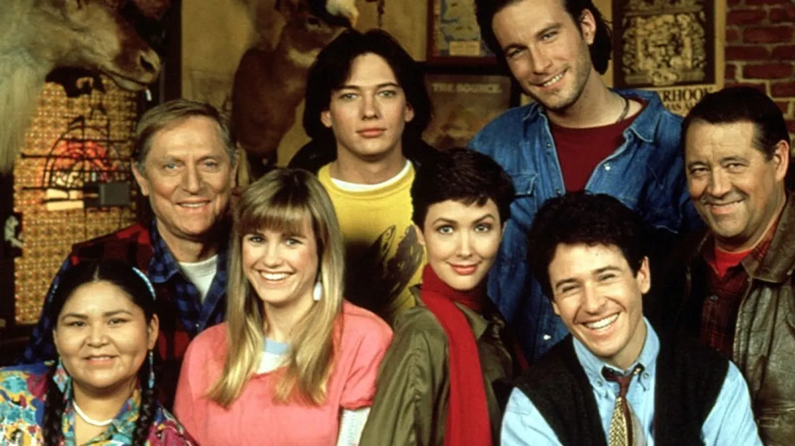

Una serie inolvidable sobre humanidad, humor y vida en el entorno inhóspito de Alaska
Doctor en Alaska (Northern Exposure) narra la historia del Doctor Joel Fleischman, un médico neoyorquino destinado a ejercer en un pequeño pueblo remoto de Alaska llamado Cicely. Lo que comienza como una condena profesional, se acabará transformando para él en una experiencia vital única e irrepetible, rodeado de los más variopintos y entrañables personajes en un mundo totalmente opuesto a Nueva York y donde se mezcla magia y realidad, profundas reflexiones existenciales y un entorno natural imponente.
Cada episodio narra sus problemas para adaptarse a un medio hostil y sus relaciones con unos vecinos tan entrañables como peculiares, daban pie a todo tipo de situaciones divertidas y con un toque surrealista y original. Todo gracias a un guión muy bien elaborado en el que destacan unos personajes realmente bien trazados encarnados por un excelente grupo de actores.
A pesar de desarrollarse en una gélida población de Alaska denominada Cicely, en realidad esta ciudad nunca existió y la serie se rodó en el estado de Washington, en las poblaciones de Redmond y Roslyn. En esta segunda es donde se encuentra el célebre cartel del Cafe Roslyn que aparecía en la cabecera y por delante del cual pasaba el mítico arce.
La serie se estrenó originalmente en Estados Unidos el 12 de julio de 1990 en la cadena CBS y llegó a su fin el 26 de julio de 1995, tras seis temporadas en antena y un gran éxito de crítica y público. En nuestro país, se emitió en La2 de Televisión Española, desde abril de 1993. Su escasa aunque fiel audiencia hizo que cambiara de día y hora de emisión en numerosas ocasiones, hasta ser relegada a la franja de madrugada.
Rob Morrow, como el Dr. Joel Fleischman, fue el actor principal de un reparto que compartía, entre otros, con Janine Turner, como ‘Maggie’ O’Connell, Barry Corbin, como Maurice J. Minnifield, John Corbett, como Christopher Danforth Stevens, Darren E. Burrows, como Ed Chigliak, John Cullum, como Holling Gustav Vincoeur y Cynthia Geary, como Shelly Marie Tambo. Un elenco que recreaba un ambiente entrañable que, desgraciadamente, no lo era tanto cuando las cámaras dejaban de rodar. De hecho, la serie finalizó porque Rob Morrow, tras el éxito de la serie, pidió un aumento de sueldo que no le fue concedido (y motivó que se fuera para rodar una película).
Cicely era igual a todos los pueblos, pero diferente a todos. Solo había que mirar más de cerca. Conocer a sus habitantes. Personajes lejos de ser arquetipos, personajes con molde propio: el ex convicto, locutor de radio y filósofo; la rica heredera convertida en única piloto del pueblo; el ex astronauta con ambiciones turísticas… En Cicely todo el mundo puede ser como quiera ser. Unos pilares que agradecen a sus fundadoras: dos pioneras feministas, Cicely y Roslyn, que llegaron al lugar a principios del siglo XX enfrentándose a todas las convenciones y obstáculos. Con el recuerdo de esas mujeres, se construyó este pueblo (Roslyn se llamaba el café principal, claro) en el que todo es posible, en el que todo el mundo tiene un lugar. Y por eso pasa de todo allí.
Estrafalaria, extravagante, del realismo mágico, surrealista… Son palabras asociadas a Doctor en Alaska. Porque era todas ellas. Porque en esa diversidad exclusiva residía su encanto y su enganche. Porque se adelantaron a conversaciones de identidad o género, por ejemplo, que podemos tener ahora. Y recordemos, eran los 90. Aún no había llegado la cacareada Edad de Oro de las series, aunque, por supuesto, Cicely y Twin Peaks fueron preparando el camino. Era única entonces y hoy, con todo lo que hemos visto y todo lo que tenemos disponible, aún lo es.
Durante años se habló de un regreso a Cicely, pero un nuevo regreso. Es decir, una nueva serie, un relanzamiento, un reboot. Un reencuentro con los personajes. Los planes nunca han salido adelante. Quizá por la muerte de uno de sus colaboradores, John Falsey. O quizá porque es imposible repetir esa conjunción de tono, mensaje, interpretaciones. Ese bienestar particular y universal. Quizá porque Cicely es imposible de repetir.
Cicely no existe. Supuestamente inspirado en Talkeetna, un adorable pueblo de Alaska frente a uno de los montes más famosos del estado y de todo EE.UU., el Denali, la producción nunca tocó la región. Rodaron siempre en el estado de Washington, entre las poblaciones de Roslyn y Redmond. Ni siquiera Mort era originario de Alaska sino del mismo Washington.